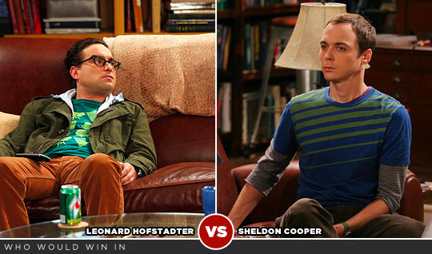

Laboratory Essentials
- Machine: 193.144.12.89
- user: userX where X{0...10}
- password userX is userX where X{0...10}
ssh ssh userX@193.144.12.89
scp
scp route_to_a_file(user machine) userX@193.144.12.89:route(server machine)
scp
scp -r route_to_a_directory(user machine) userX@193.144.12.89:route(server machine)
Contents
- Linear Programing: The Happiness Problem
- Model
- Using CPLEX solver (terminal)
- Using CPLEX solver (API JAVA)
- Game-Theory and Linear Programming: Two-Person Zero-Sum Games
- Paper-Rock-Scissors Game
- The Ultra Conservative Investor
- Using AMPL + NEOS
The Happiness Problem
Description
There are 7 days in a week, so there are 168 hours in a week. We want to allocate our time between:
- Classes and Studing (C)
- Fun activities and going to parties (P)
- Vital activities such as slepping, eating, ... (O)
Suppose that our notion of happines it can be mesured and follow the following function: happines(P,O,S) = 2*P + O .
Suppose that to survive we need at least 56 hours on O, which is 8 hours per day. Besides, to mantain sanity we need P + O >= 70 . To pass our courses, we need S >= 60 , but more if don't sleep enought or spend too much time on parties 2*S + O -3*P >= 150 . If don't go parties at all then this is not a problem, but if we spend more time on P then we need to sleep more or study more.
The Happiness Problem
Model
Maximize; //This is the optimitzation sense.
obj: 2*P + O; //This is the objective function.
Subject to: //This are the constraints.
To survive: O >= 56;
To sanity: P + O >= 70;
To pass the course: S >= 60;
For compensation: 2*S + O -3*P >= 150;
Total Amount of (H) in a week: S + P + O = 168;
It can be possible not to have fun: P >=0;
end;
The Happiness Problem
CPLEX (terminal)
$ ./cplex
CPLEX> help
The Happiness Problem
CPLEX (terminal)
$ ./cplex
CPLEX> enter
CPLEX> Enter name of the problem: happiness.lp
CPLEX> Enter new problem ['end' on a separate line terminates]:
CPLEX> //here copy and paste the previous model
CPLEX> optimize
CPLEX> display solution objective
CPLEX> display solution variables -
The Happiness Problem
CPLEX (Java API)
import ilog.concert.*;
import ilog.cplex.*;
public class Happiness {
public static void main(String[] args){
try {
IloCplex cplex = new IloCplex();
IloObjective obj = cplex.addMaximize();
IloRange c1 = cplex.addRange(-infinity, 70.0, "c1");
IloNumVar P = cplex.numVar(cplex.column(obj, 1.0).and(
cplex.column(c1, -1.0).and(cplex.column(c2, 1.0).and(
cplex.column(c3, 1.0)))),0, infinity, "P");
cplex.solve();
System.out.println("f.o: "+cplex.getObjValue());
System.out.println("P: "+cplex.getValue(P));
} catch (IloException e) {System.err.println("Concert exception caught: " + e);}}}
Game Theory and Linear Programming
Paper-Rock-Scissors Game

Game Theory and Linear Programming
Paper-Rock-Scissors Game

Game Theory and Linear Programming
Paper-Rock-Scissors Game
| PayOff Matrix |
||||
|---|---|---|---|---|
| Rock | Paper | Scissors | ||
| Rock | 0 | -1 | 1 | |
| Paper | 1 | -0 | -1 | |
| Scissors | -1 | 1 | 0 | |
Game Theory and Linear Programming
Paper-Rock-Scissors Game : Sheldom Model

x== probability that Sheldom chooses rocky== probability that Sheldom chooses paperz== probability that Sheldom chooses scissorsv== total value (smallest of column totals)
| PayOff Matrix | Rock | Paper | Scissors |
|---|---|---|---|
| Rock (x) | 0 | -1 | 1 |
| Paper (y) | 1 | 0 | -1 |
| Scissors (z) | -1 | 1 | 0 |
| Average (v) | y-z | z-x | x-y |
Game Theory and Linear Programming
Paper-Rock-Scissors Game : Sheldom Model
Maximize; //This is the optimitzation sense.
obj:v //This is the objective function
Subject to //This are the constraints.
c1: y - z >= v (Rock)
c2: z - x >= v (Paper)
c3: x - y >= v (Scissors)
c4: x + y + z = 1
Bounds
x >= 0
y >= 0
z >= 0
end
Game Theory and Linear Programming
Paper-Rock-Scissors Game : AMPL
set ROWS;
set COLS;
param {ROWS,COLS} default 0;
var x{COLS} >= 0;
var v;
maximize zot: v;
subject to ineqs {i in ROWS}:
sum {j in COLS} -A[i,j] * x[j] + v < = 0;
subject to equal:
sum {j in COLS} x[j] = 1;
Game Theory and Linear Programming
Paper-Rock-Scissors Game : AMPL
data;
set ROWS := Paper Scissors Rock;
set COLS := Paper Scissors Rock;
param A: Paper Scissors Rock:=
Paper 0 1 -2
Scissors -3 0 4
Rock 5 -6 0
;
Game Theory and Linear Programming
Paper-Rock-Scissors Game : AMPL
solve;
printf {j in COLS}: "%3s %10.7f \n", j, 100*x[j];
printf {i in ROWS}: "%3s %10.7f \n", i, 100*ineqs[i];
printf "Value = %10.7f \n", 100*v;
Game Theory and Linear Programming
The Ultra Conservative Investor
| Year | Ibex 35 | NASDAQ | Dow Jones | DAX | Gold |
|---|---|---|---|---|---|
| 2010 | 1,235 | 1,217 | 1,092 | 1,080 | 0,872 |
| 2011 | 1,030 | 0,903 | 1,103 | 1,150 | 0,825 |
| 2012 | 1,326 | 1,333 | 1,080 | 1,213 | 1,006 |
| 2013 | 1,161 | 1,086 | 1,092 | 1,156 | 1,216 |
| 2014 | 1,023 | 0,959 | 1,063 | 1,023 | 1,244 |
Game Theory and Linear Programming
The Ultra Conservative Inversor
- Lets consider now the historical return on investment data: ROI.
- We can view this as a payoff matrix in a game between Fate and the investor.
- The columns represents pure strategies for our conservative investor.
- The rows represents how history might repeat itself.
- So in 2015, Fate won't just repeat a previous year but, rather will present some mix of these previous years.
- The inverstor won't put all of his money into one asset. Instead he will put a certain fraction into each one.'
References
<Thank You!>
Jordi Mateo Fornés